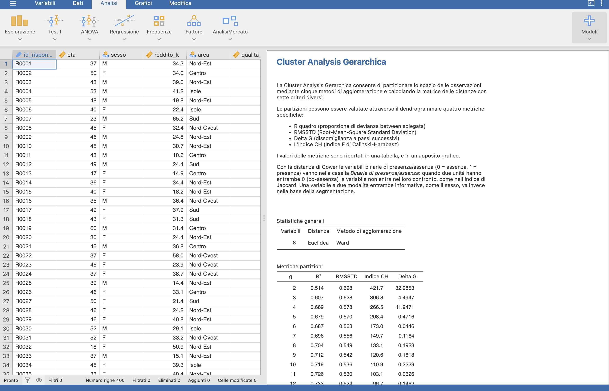
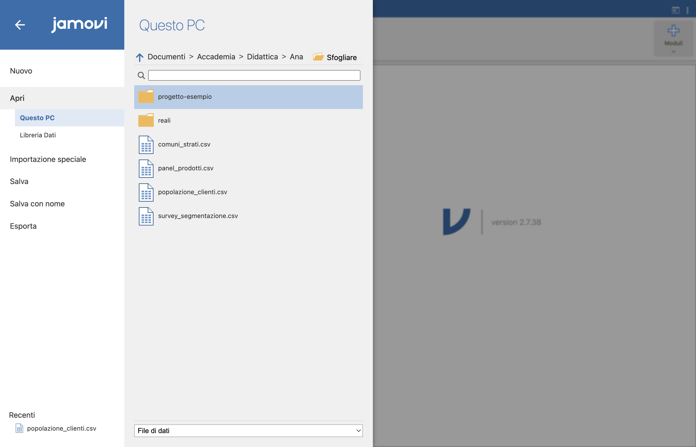
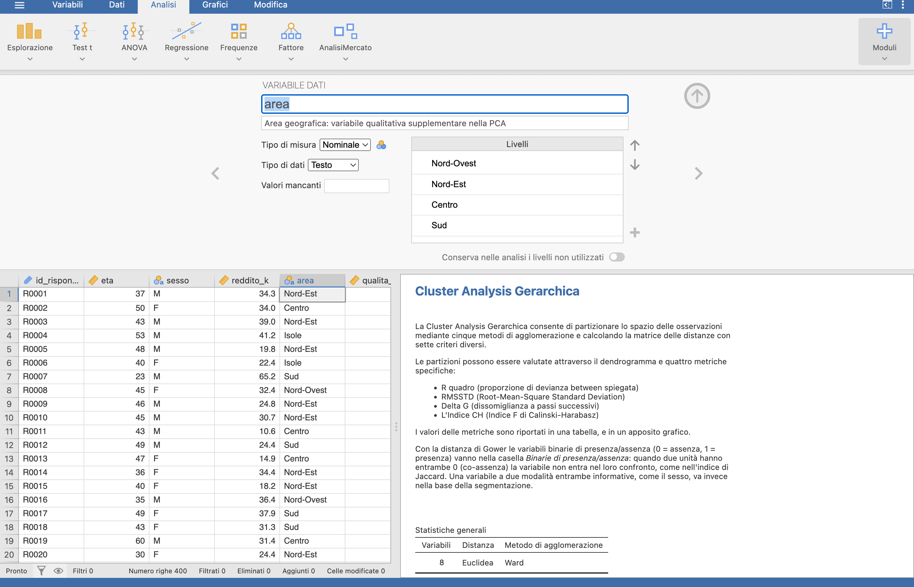
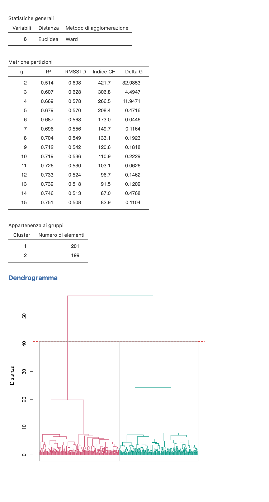
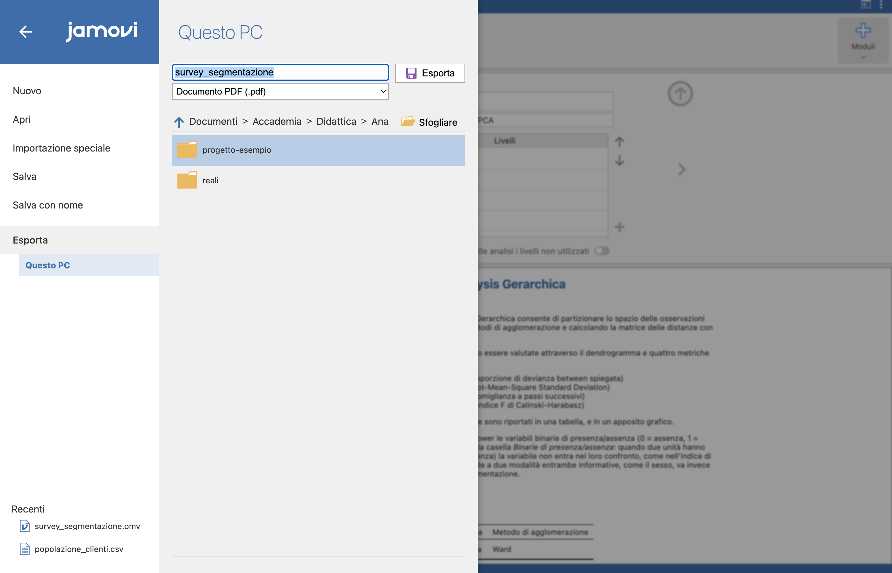

flowchart TD
A[1. Importa CSV] --> B[2. Tipizza le variabili]
B --> C{3. Scegli l'analisi<br/>dal menu AnalisiMercato}
C --> D[4. Configura opzioni]
D --> E[5. Leggi output reattivo]
E --> F{Soddisfatto?}
F -- No --> D
F -- Sì --> G[6. Salva .omv]
G --> H[7. Esporta PDF/HTML]
13 Tour dell’interfaccia
Capire l’anatomia della finestra di Jamovi è il prerequisito per usare AnalisiMercato in modo fluido. Questo capitolo è una rapida visita guidata: importare dati, eseguire un’analisi, leggere l’output, salvare i risultati.
13.1 Anatomia della finestra principale

| Zona | Funzione |
|---|---|
| Barra delle schede (in alto a sinistra) | Schede Variabili, Dati, Analisi, Grafici, Modifica |
| Foglio dati (sinistra) | I dati, come in Excel/SPSS |
| Pannello dei risultati (destra) | Tabelle e grafici prodotti dalle analisi |
Menu ≡ (in alto a sinistra) |
Apri/Salva, Esporta |
Menu ⋮ (in alto a destra) |
Preferenze (formato numerico, modalità sintassi, …) |
Pulsante + Moduli (in alto a destra) |
Installa e rimuove i moduli |
13.2 jamovi in italiano e in inglese
Le dispense e le schermate usano jamovi in italiano. Chi lo usa in inglese trova qui la corrispondenza delle voci citate nei capitoli; quelle di AnalisiMercato (menu e pannelli delle opzioni) sono in italiano in entrambi i casi.
| Dove | jamovi in italiano | jamovi in inglese |
|---|---|---|
| Schede in alto | Variabili, Dati, Analisi, Grafici, Modifica | Variables, Data, Analyses, Plots, Edit |
Menu ≡ |
Apri, Salva, Salva con nome, Esporta; Questo PC → Sfogliare; Libreria Dati | Open, Save, Save As, Export; This PC → Browse; Data Library |
Menu ⋮ (Preferenze) |
Formato numerico, Formato valore p, Tema del grafico, Modalità sintassi, Lingua | Number format, p-value format, Plot theme, Syntax mode, Language |
Pulsante + Moduli |
libreria jamovi, Gestione dei moduli installati; schede Installato, Disponibile, Caricamento Ausiliario Moduli | jamovi library, Manage installed; Installed, Available, Sideload |
| Scheda Dati | Calcola, Trasforma, Filtri | Compute, Transform, Filters |
| Tipi di variabile | Continua, Ordinale, Nominale, ID | Continuous, Ordinal, Nominal, ID |
| Analisi di jamovi citate | Esplorazione → Descrittive; Frequenze → Tabelle di Contingenza → Campioni Indipendenti; Frequenze → Test per la Proporzione in un Campione → 2 Risultati; ANOVA → ANOVA | Exploration → Descriptives; Frequencies → Contingency Tables → Independent Samples; Frequencies → One Sample Proportion Tests → 2 Outcomes; ANOVA → ANOVA |
| Clic destro sui risultati | Copia, Esporta | Copy, Export |
13.3 Importare i dati
Jamovi legge nativamente:
- file
.omv(formato Jamovi) - file
.csv,.tsv - file SPSS
.sav - file R
.rds - file Excel
.xlsx - file Stata
.dta, SAS.sas7bdat
Nelle dispense useremo i dataset didattici sintetici inclusi nel modulo (Libreria Dati), generati dallo script data/00-genera-dataset.R. Nei capitoli sono indicati con il nome del file (popolazione_clienti.csv, comuni_strati.csv, survey_segmentazione.csv, panel_prodotti.csv): nella Libreria Dati corrispondono a Popolazione clienti, Comuni per strati, Survey di segmentazione e Panel di prodotti. I passi che seguono servono invece per aprire un file .csv qualsiasi, per esempio i dati del proprio progetto.
13.3.1 Passi
- Menu
≡→ Apri → Questo PC → Sfogliare. - Selezionare il file di testo con valori separati da virgole (CSV, comma-separated values).
- Verificare che il delimitatore sia riconosciuto correttamente (Jamovi auto-detect).

13.3.2 Tipizzare le variabili
Jamovi assegna automaticamente un tipo a ogni colonna:
| Icona | Tipo | Esempio |
|---|---|---|
| 🧮 | Continua | reddito, età, spesa |
| 🔢 | Ordinale | classe sociale, livello istruzione |
| 🏷️ | Nominale | sesso, area geografica |
| 🆔 | ID | id_cliente |
Cliccare due volte sull’intestazione di colonna per aprire l’editor di variabile: si può cambiare nome, tipo, livelli, descrizione, valori mancanti.

AvvisoTipizzazione corretta = analisi corrette
Molte analisi di AnalisiMercato controllano il tipo della variabile:
- l’Analisi delle Componenti Principali (PCA, Principal Component Analysis) accetta come variabili attive e supplementari quantitative solo variabili di tipo Continua; le supplementari qualitative (colore del biplot, mappa di posizionamento) devono essere di tipo Nominale od Ordinale;
- con il Jaccard binario le variabili devono avere due sole modalità: variabili 0/1 di tipo Continua oppure Nominale con livelli 0/1 danno le stesse distanze e la stessa partizione, ma con il tipo Nominale R², deviazione standard media dei gruppi (RMSSTD, Root-Mean-Square Standard Deviation) e indice di Caliński-Harabasz (CH) restano vuoti (per la scelta di \(k\) restano il dendrogramma e il Delta G); con due modalità testuali (per esempio Sì/No) il modulo dichiara in una nota quale ha trattato come assenza;
- la caratterizzazione accetta descrittori quantitativi (tipo Continua) e qualitativi (Nominale od Ordinale); la variabile da caratterizzare è di solito di tipo Nominale (i cluster, e allora si usa
catdes), ma può essere anche quantitativa (e allora si usacondes).
Se un’analisi non mostra una variabile nella lista delle disponibili, quasi sempre il tipo è sbagliato.
13.4 Eseguire la prima analisi
Aprire il dataset Survey di segmentazione da Menu ≡ → Apri → Libreria Dati → Tecniche di Analisi di Mercato e provare un’analisi di esempio:
- Analisi → AnalisiMercato → Cluster Analysis → Cluster Analysis Gerarchica.
- Trascinare le 8 variabili
qualita_prima_di_prezzo…cerco_sempre_le_offertenella casella Base della segmentazione. - Lasciare i default (Distanza Euclidea, Ward, 2 gruppi, Standardizza: sì).
- Spuntare Dendrogramma per attivare il grafico.
Sul pannello a destra compare immediatamente l’output. Jamovi è reattivo: ogni modifica nelle opzioni rigenera output e grafici al volo.

13.5 Salvare e condividere
13.5.1 Salvare la sessione
Menu ≡ → Salva / Salva con nome salva il file .omv che include:
- i dati;
- tutte le analisi eseguite con le loro opzioni;
- i risultati (tabelle, grafici);
- eventuali colonne di output prodotte dalle analisi (es. la colonna “Cluster” aggiunta dalla cluster analysis).
Riaprendo il .omv su un’altra macchina (con AnalisiMercato installato), tutto è esattamente come l’avevi lasciato.
13.5.2 Esportare i risultati
Menu ≡ → Esporta, scegliendo il formato PDF o HTML:
| Formato | Quando usarlo |
|---|---|
| Consegna finale, stampa | |
| HTML | Condivisione web, allegato in mail |
Jamovi 2.7.x non esporta i risultati in Word: per portare i risultati in un report scritto in Word si copiano i singoli elementi (vedi sotto) e si incollano nel documento.

13.5.3 Esportare singoli elementi
Tasto destro su una tabella o un grafico: Copia copia l’elemento negli appunti, pronto da incollare in Word; Esporta lo salva in un file.
Per i grafici, Jamovi consente di scegliere la risoluzione e il formato (PNG, SVG, PDF, EPS e PowerPoint .pptx): per pubblicazioni accademiche, scegliere SVG o PDF.
13.6 Workflow tipico in AnalisiMercato
A questo punto si è in grado di usare qualunque analisi di AnalisiMercato. Le prossime parti entrano nel merito di ciascuna.